Three more passes on every monster A4
All 18 monsters built or refined so far, each given at least 3 new passes against your concept. Every pass was judged side by side against the best so far, in both left/right orders, and kept only if it won both. Each strip shows before this round on top and after below. Every other monster renders exactly as before, and no frame clips.
Skeletons
Burning Dead
3 passes: 2 kept; a wider helm brim lost (mushroom cap from the side).
Sword now held low and forward, point down, as in the concept; a broader dark blued-steel blade; bones 1.2x thicker.
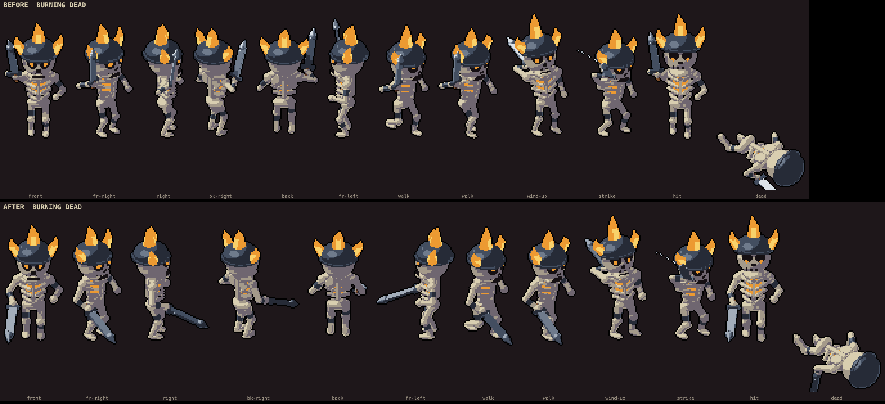
Crypt Spearman
3 passes, all kept.
Spear angled up across the body with a thicker shaft and a bigger leaf head; the blue rag now hangs at the back too, like your back view.
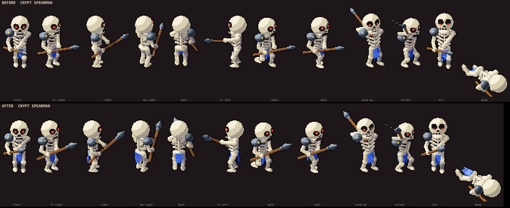
Bone Axeman
3 passes, all kept. Cheek guards still flare a little from the front.
A broad axe head about skull-size; the helm raised so the eyes show; cheek and neck guards angled to catch the light.
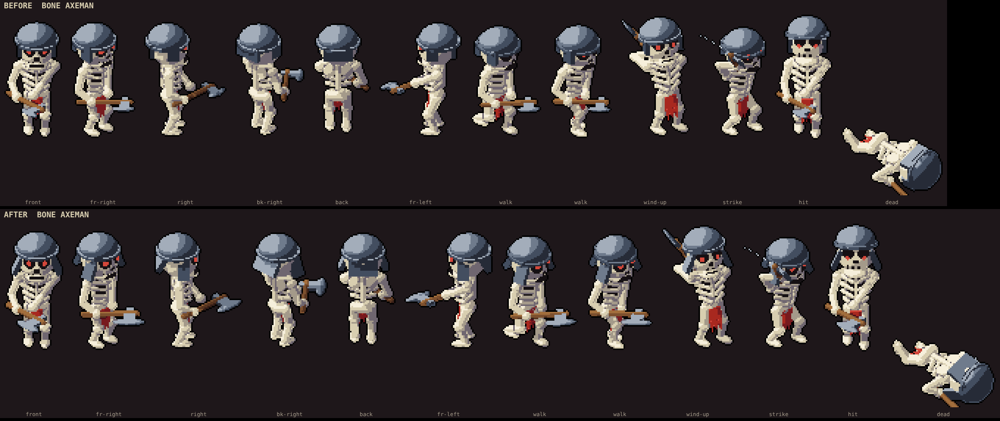
Grave Crossbowman
3 passes: 1 kept; two quiver tries lost (bolts blend into the bones at this size).
A longer, thicker stock and a wide bent steel prod.
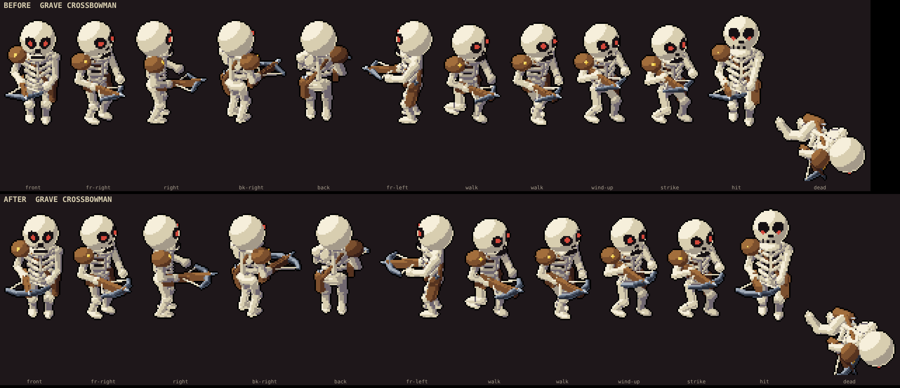
Tomb Guard
3 passes: 2 kept, 1 tie.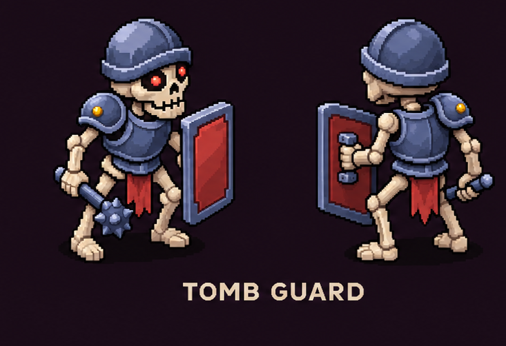
A taller, wider tower shield; a longer mace with a bigger nine-spiked ball.
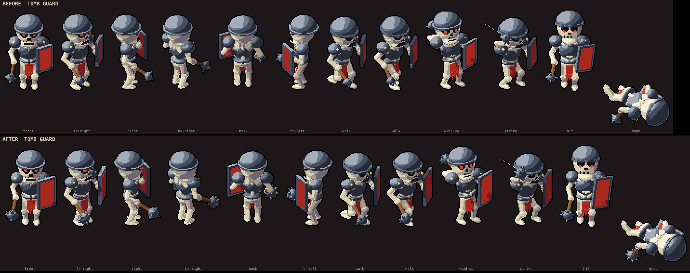
Imps
Fallen One (Spearling)
3 passes, all kept.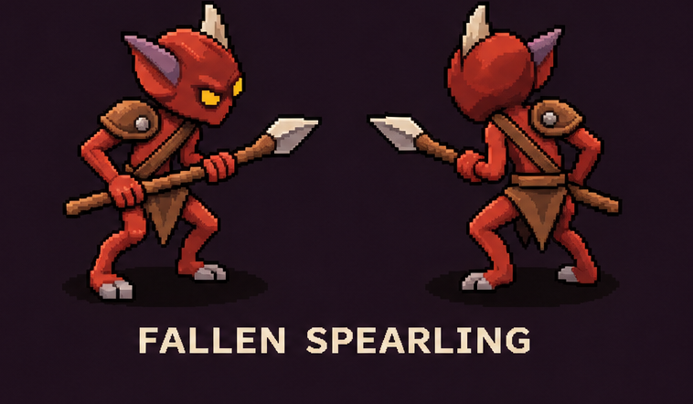
Brick-red skin (the old flesh read near-black), cream horns, mauve ears; a stouter spear with a broad pale head; chunkier limbs and body.
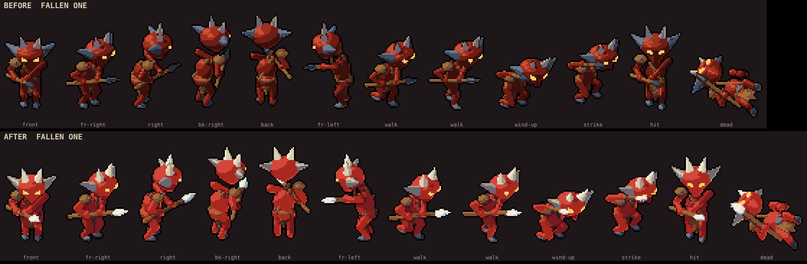
Fallen Shaman (Ember Acolyte)
4 passes: 3 kept; a shorter flared robe lost.
The same red skin; a stouter staff whose hook curls round the orb; ears in the hood purple, as in the concept.
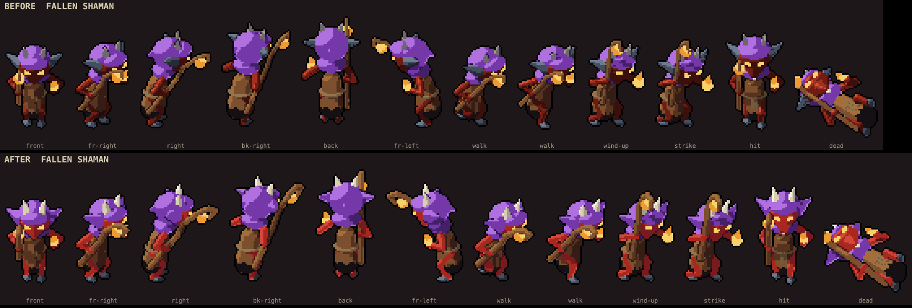
Fallen Knifer
3 passes, all kept.
The new colors; a bigger pale leaf knife with an iron guard; chunkier limbs.
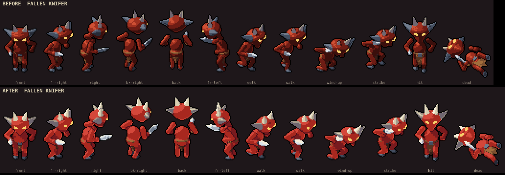
Fallen Slinger
4 passes: 3 kept. Still a thin line in the pure side views.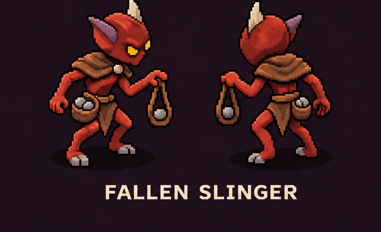
The new colors; the sling bows into a wide loop with a bigger cup; grey stones; a bigger capelet.
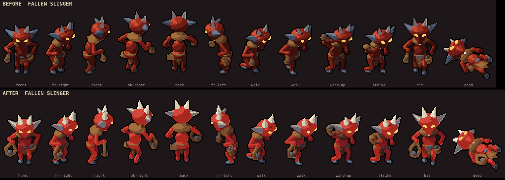
Hounds
Wolf (Grey Pack Hunter)
3 passes, all kept.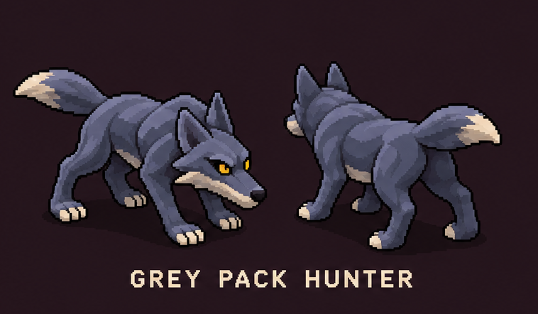
A lean, long-legged body; slate-blue hide with a pale throat, belly and toes; a bushy pale-tipped tail.
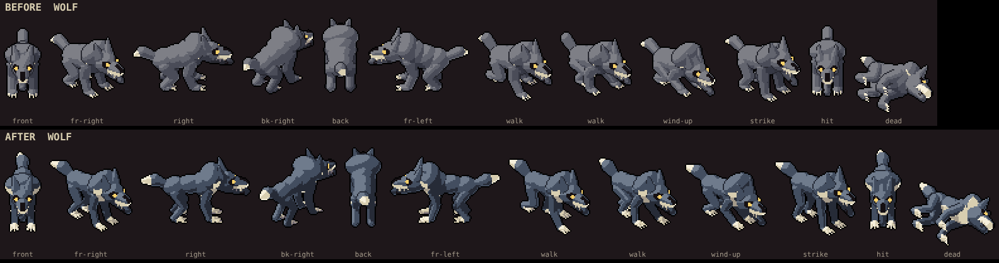
Bone Hound
5 passes: 3 kept; pale chest (hidden by the scarf) and crescent horns lost.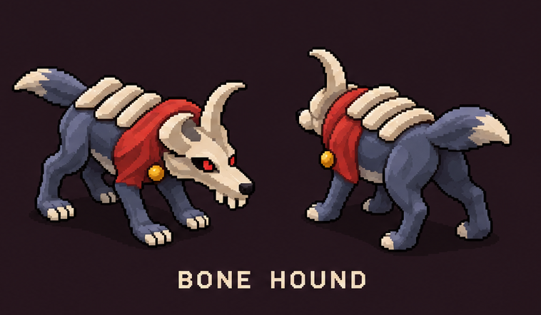
The lean body; broad bone slabs lying across the back; a bushy tail.
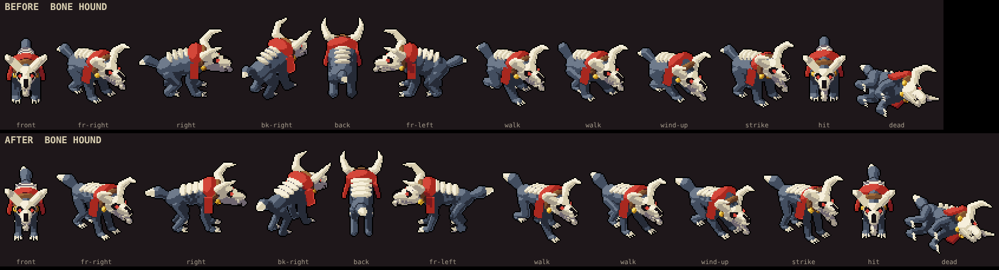
Hell Hound (Ember Hound)
3 passes, all kept.
The lean body with refitted ember slashes; cream toes; a cream skull; a bushy tail.
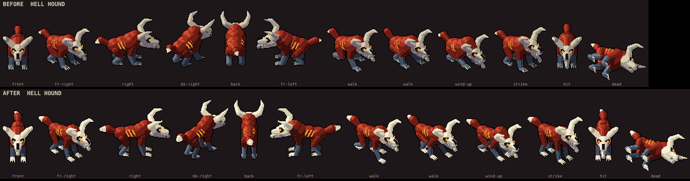
Brigand Mastiff
4 passes: 3 kept; longer legs were a tie.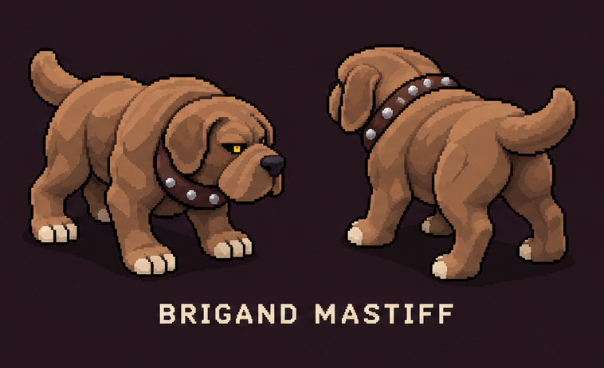
A bigger head with heavier droopy ears; cream toes; a broader, darker studded collar.
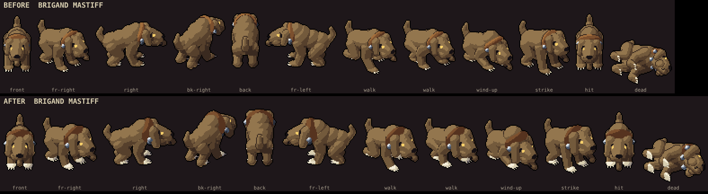
Ogres and the Treant
Ogre Clubber
3 passes, all kept.
Top-heavy: slimmer belly, broader chest, bigger shoulders and arms; head hunched forward into a hump; a thicker log club.
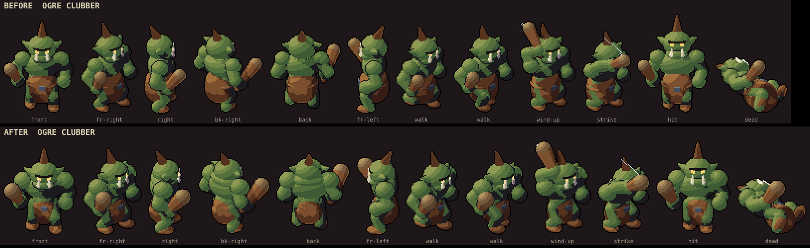
Ogre Rockthrower
3 passes, all kept.
The same build; a bigger rock lifted overhead and a fuller rock bag.
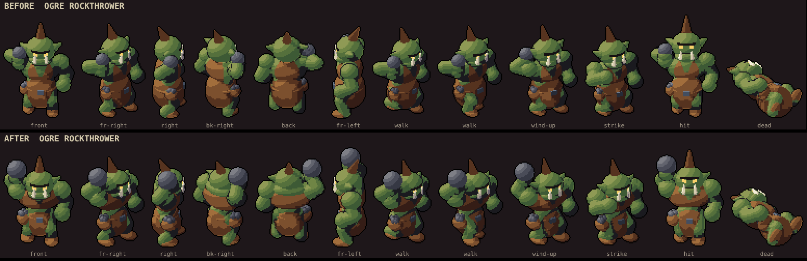
Ogre Shieldbearer
3 passes, all kept.
The same build; a grey slate helm instead of near-black; a bigger plank shield with steel bands.
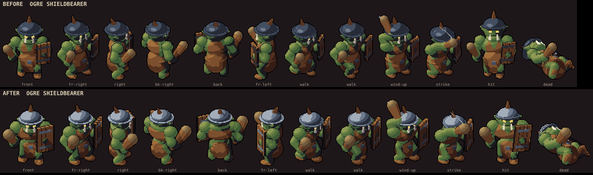
Ogre Enforcer
3 passes, all kept.
The same build; the cleaver shows its broad face; bigger spiked pads; bracers over the thicker forearms.
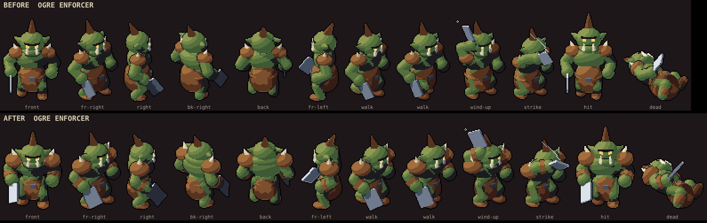
Treant Elder
3 passes: 2 kept; blunter roots lost (the base read as a bell).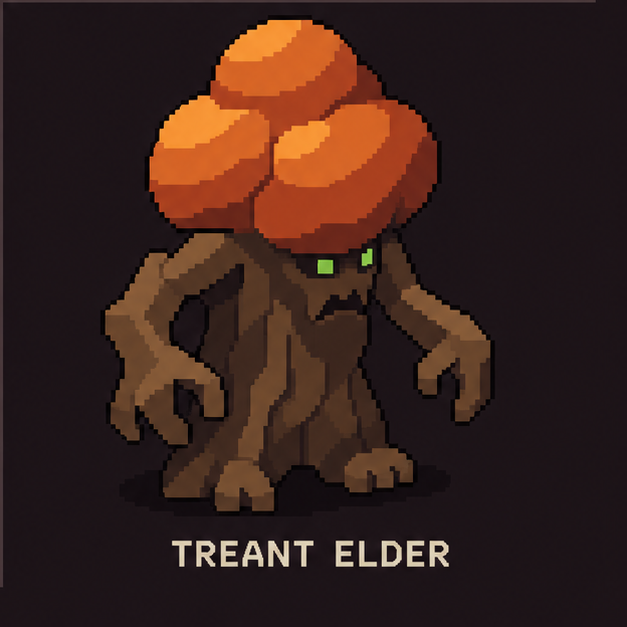
The crown rebuilt as three big lobes; hands held out from the trunk with bigger, longer claws.
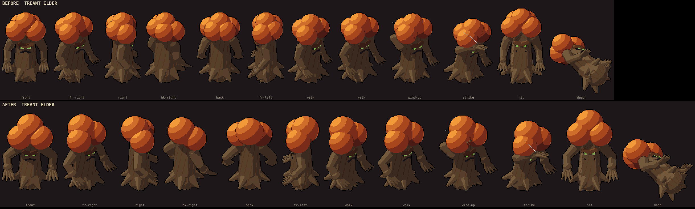